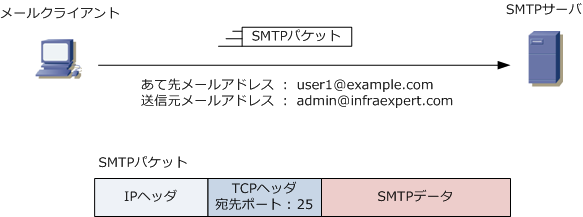
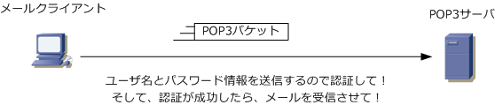
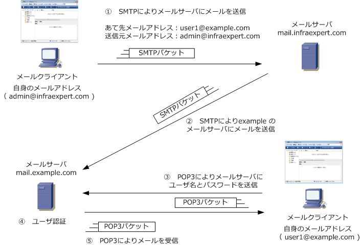
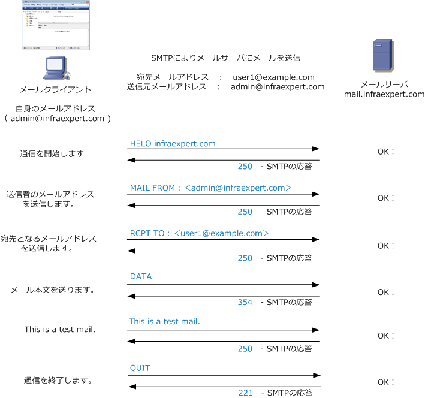
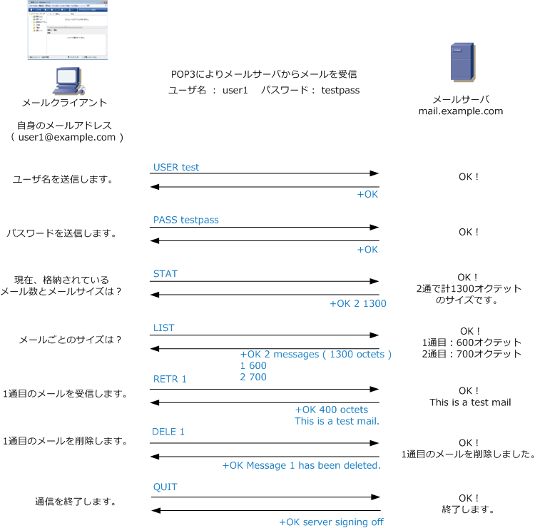

SMTP & POP
SMTPとは
SMTP（Simple Mail Transfer Protocol）は、電子メールを送信するために使用するアプリケーション層 のプロトコルです。メールソフトから、メールサーバへ電子メールを送信する際にこのSMTPを使用します。 SMTPは、TCP上で動作しており、SMTPサーバにアクセスするために使用しているポート番号は 25 です。

POPとは
POP（Post Office Protocol）は、電子メールを受信するために使用するアプリケーション層プロトコル。 メーラでメールサーバから電子メールを受信する際にPOPを使用します。現在ではPOPのバージョン 3 が 主流なのでPOPといえばPOP3を指します。POPではパスワード情報は暗号化されずそのまま送信されます。 POPはTCP上で動作しており、POPサーバにアクセスするために使用しているポート番号は110となります。

メールの送受信の仕組み - 簡易説明
下図では、infraexpert.comのドメイン配下のユーザからexample.comのドメイン配下のユーザに対して メールを送信しようとしています。下図の通りメールは直接届くのではなく、メールサーバを経由します。

| シーケンス | 説明 |
|---|---|
| ① | ユーザがメーラーでメールを作成して、メーラーで設定したメールサーバへSMTPによりメールを送信。 |
| ② | メールを受信したメールサーバは、メールアドレスの＠以降のドメイン名から宛先を確認する。 DNSより名前解決してIPアドレスを取得すると、SMTPによりexample.comのメールサーバにメールを送信。 これによって、送信されたメールはexample.comのメールサーバに格納される。SMTPの役割はこれで終了。 |
| ③ | exmaple.comのユーザはメーラーでメールチェックを実行。 メーラーで設定したメールサーバへPOP3によりユーザ名とパスワード情報を送信。 |
| ④ | メールサーバは、サーバ上に登録しているユーザ名とパスワード情報を確認し、ユーザ認証を実施。 |
| ⑤ | ユーザ認証が成功すると、宛先アドレスがexampleのメールをメールサーバが送信し、ユーザがメール受信。 |
SMTPによるメール送信の仕組み - 詳細説明

メールクライアントは、上図の通りテキストコマンドにより要求を出すのですが、これをメーラが担当します。 メールクライアントからの要求コマンドに対して、サーバは３桁の数字により応答を行います。※上図にある 「This is a test mail」はメールの本文内容であってメールクライアントからの要求コマンドではありません。
POP3によるメール受信の仕組み ( 詳細説明 )

SMTPと同様にPOP3の場合もメールクライアントから、上図の通りテキストコマンドにより要求を出します。 メールクライアントからの要求コマンドに対して、サーバは正常な場合は「+OK」、エラーが発生した場合 「-ERR」の応答を返します。応答はこの2種類だけとなりますがこの応答にメッセージを付加して送信します。